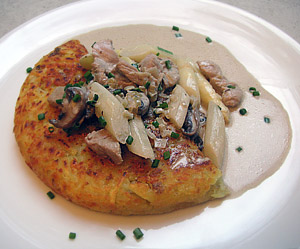

Züri-Geschnetzeltes mit badischem Spargel
5 von 6Eine Charlotte mit einigen Champignons in etwas Butter andämpfen. Mit ca. 1 Dl Weisswein ablöschen. 2 Dl Bouillon bzw. Kalbsfond beigeben, etwas einkochen. Der bereits blanchierte und in mundgerechte Stücke geschnittener Spargel beigeben. 2.5 Dl Rahm beigeben und mit Salz und Pfeffer abschmecken. In einer separaten Gusseisenpfanne pro Person ca. 150 g Kalbsgeschnetzeltes sehr scharf und ganz kurz anbraten. Sauce beigeben und mit einer Rösti servieren und mit Schnittlauch garnieren.
